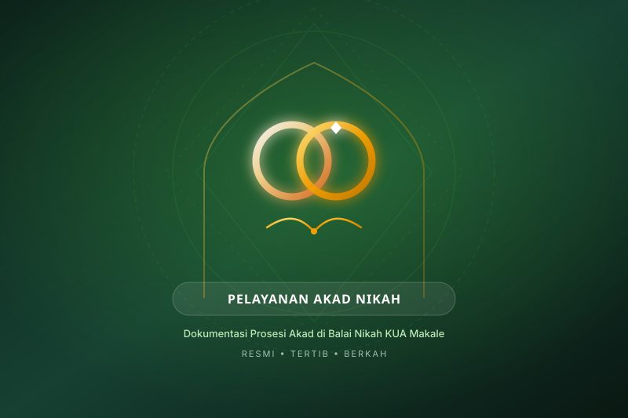
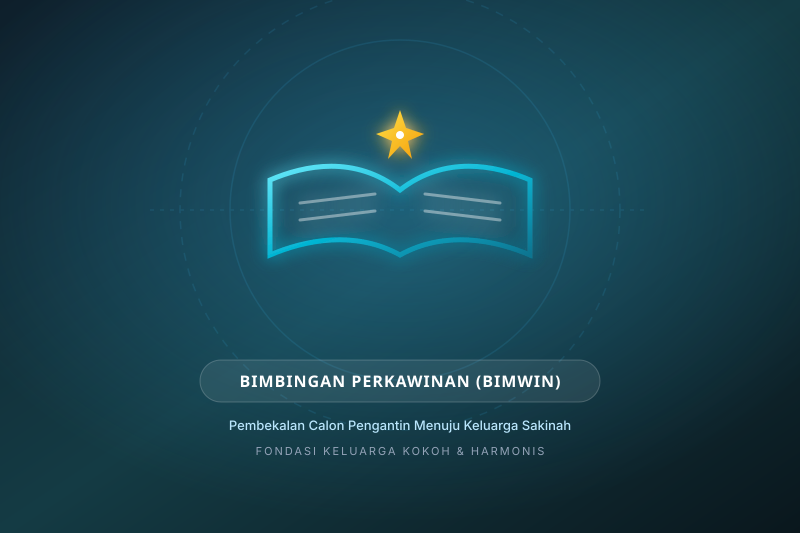
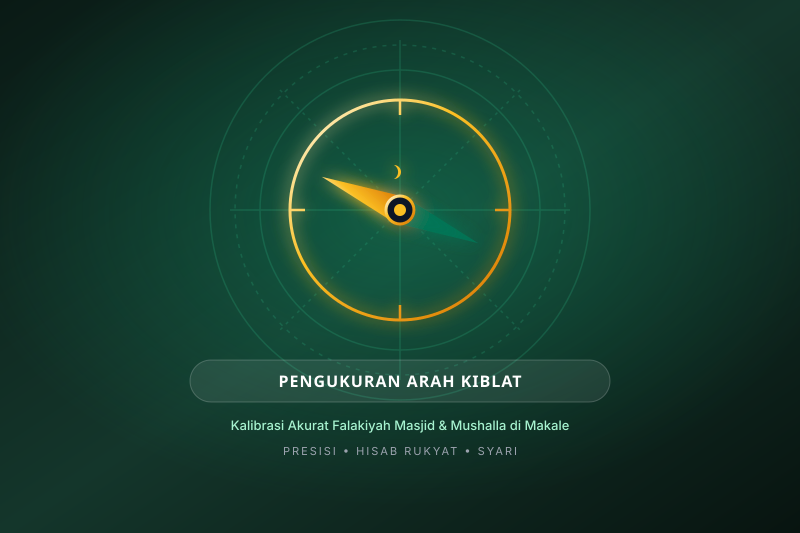
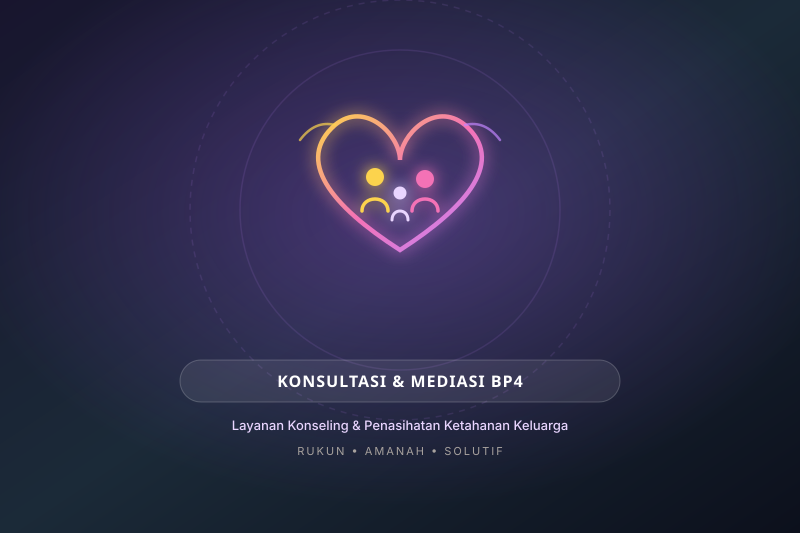
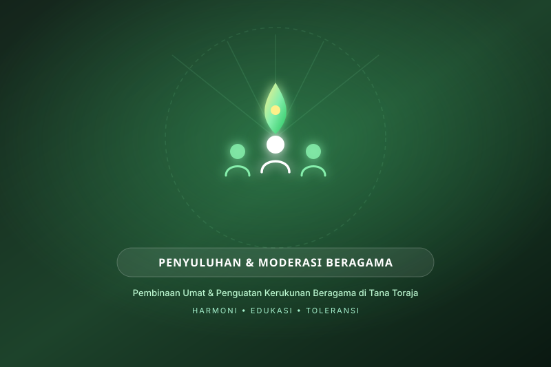
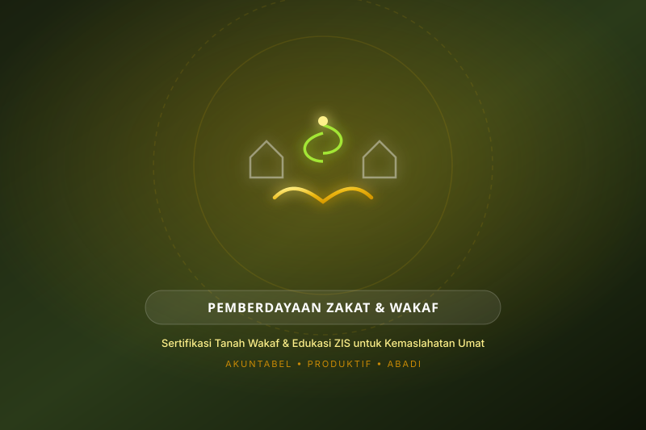

PelayananPelayanan Akad Nikah
Pelayanan prosesi ijab kabul resmi di Balai Nikah KUA Makale
Akses cepat kanal resmi konsultasi dan informasi publik KUA Makale
Dokumentasi pelayanan dan aktivitas resmi KUA Makale

PelayananPelayanan prosesi ijab kabul resmi di Balai Nikah KUA Makale

BimbinganKursus pranikah bagi catin demi ketahanan rumah tangga sakinah

Sosial & FalakKalibrasi dan penentuan arah kiblat masjid/mushalla secara presisi

BimbinganLayanan konseling penasihatan dan penyelesaian problem rumah tangga

Sosial & FalakEdukasi kerukunan dan wawasan keagamaan bagi masyarakat Makale

PelayananPenerbitan AIW dan pendataan aset wakaf untuk kemaslahatan umat
Deskripsi foto kegiatan KUA Makale.